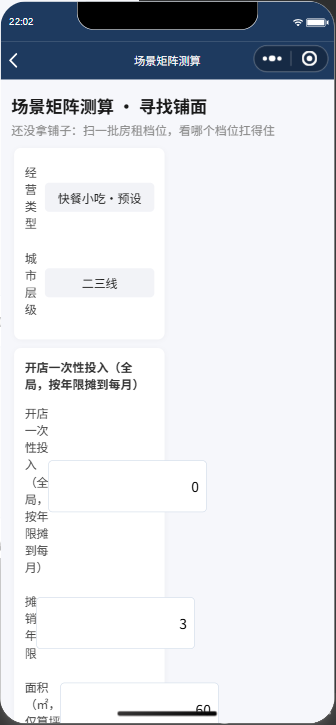
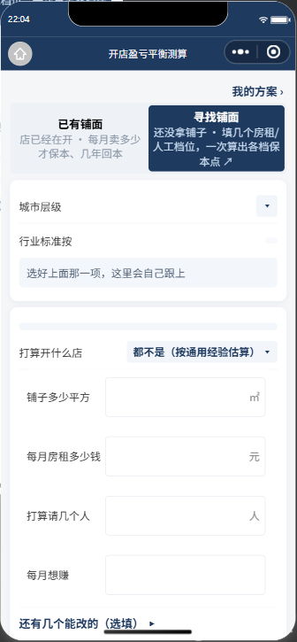
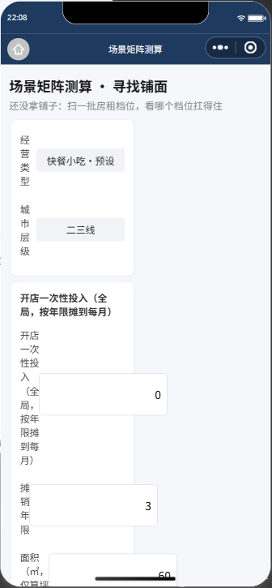

t 白名单 ⇒ 渲染空白且零报错tools/check_page_terms.js 本来就会红（退出码 1，精确点名
index.wxml:46/47）；P1 提交只跑了 3 个子套件、未跑 verify_all 全量 ⇒ 一个已有的守卫被跳过。| 证 | 手段 | 结果 |
|---|---|---|
| A · 真机批量 | 矩阵页 ?mode=reverse + onGenerate()；维度 8×2×4×3 |
192/192 行 出数 · nullBreak=0 · row0 保本 28604.65 元 · insight「可承受最高月租 ¥10000」 |
| B · 离线探针 | 直接 require 生产模块 utils/bizPreset.js → assembleItems；9 预设 × 2 输入（房租 8000 / 0） |
18/18 pass · 每例 var 只有 ["other"]（合法） · utility/manage 全部落 fixed_items 且非 0 |
| C · 变异对照 | 把 utility/manage 还原成改前写法 form:'revenue_rate' 再跑同一探针 |
9/9 抓错 ⇒ badVar=["utility","manage"]、pass=false ⇒ 探针非假绿 |
契约单源：cloudfunctions/*/cx_indicatorRef.js:121-122 ——
FIXED_KEYS=['rent','labor','utility','manage','other'] ·
VAR_KEYS=['takeawayComm','grouponComm','cardFee','other']。
utility/manage 现落在 fixed 侧 ⇒ 合规，且引擎零改动、51 副本零重部署。
问题 1 · 运行路径不可达 —— pages/sandbox/index.js:326 初值 mode:'forward'；全页唯一 setData({mode}) 在 :630，但 :626-629 在 mode==='reverse' 时提前 return 跳去矩阵页（R290 v5：首页恒 forward）。
$ a2 首页点「找店」
before = { route: pages/sandbox/index, dataMode: forward }
after = { route: pages/sandbox/matrix, dataMode: reverse,
title: "场景矩阵测算 · 寻找铺面",
subtitle: "还没拿铺子：扫一批房租档位，看哪个档位扛得住" } ← 已跳页
问题 2 · 即便可达也取不到值（t 白名单漏登记） —— pages/sandbox/index.js:213-214 只登记了 l1Title/l1Guide，漏 l1TitleRev/l1GuideRev。
$ a3 强制 setData({ mode:'reverse' })
modeAfter = "reverse"
hasL1TitleRev = false ← 键根本不在 data.t 里
hasL1GuideRev = false
l1TitleRev = "<undefined>"
tKeysL1 = ["l1Title","l1Guide"] ← 只有这两个
WXML 对 {{undefined}} 不报错、不警告 ⇒ 渲染为空白。该页 :267 的注释恰好写下了这条纪律：
「三处登记的第二处……漏登记 ⇒ 渲染空白且零报错」。
问题 3 · 既有守卫本来就会红
$ node tools/check_page_terms.js ; echo $?
❌ P2-1 每个页面 wxml 用到的 t.<键> 都在同页 t:{} 里（零静默空白）
· pages/sandbox/index.wxml:46 用了 t.l1TitleRev 但 index.js 的 t 里没有
· pages/sandbox/index.wxml:47 用了 t.l1GuideRev 但 index.js 的 t 里没有
===== 页面术语键守卫结果：7 通过 / 1 失败 =====
1 ← 真实退出码 = 1（红）
该守卫自防护栏同时全绿（扫描 56 文件 / TERMS. 1209 处 / t. 用法 1249 次 / 27 页面）
⇒ 它是活的、能精确点名，只是这一批没被跑到。



路线 B（推荐）· 删死代码，与 R290 v5 口径一致
index.wxml:46-47 三元分支 → 回到 {{t.l1Title}} / {{t.l1Guide}}l1TitleRev/l1GuideRev（cp + md5 校验一致）matrix.js:123-125，本轮实测通过），首页无需重复承担路线 A · 若仍要保留首页 reverse 文案：在 index.js 的 t:{} 补
l1TitleRev: M.l1TitleRev, l1GuideRev: M.l1GuideRev, ⇒ 但按 R290 v5 它仍是死代码。
verify_all 167 套件）。本轮教训 = 跳过全量 ⇒ 已有的守卫形同不存在。
建议在批次提交脚本里硬卡「未跑全量不得提交」。
assembleItems → 同一 calcSandbox），已由证 A/B/C 覆盖。node review/evidence/r291_p1_walkthrough/probe_bizpreset.js ·
node review/evidence/r291_p1_walkthrough/walk1.js <证据目录> ws://127.0.0.1:9420 a1 ·
node tools/check_page_terms.js（应红，退出码 1）